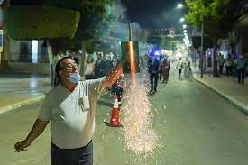

La mejor feria del mundo.La Feria hoy en día representa un encuentro que trae a nuestra localidad a artistas de talla internacional y prestigiosas figuras del toreo; el recinto ferial ofrece un sinfín de atracciones infantiles y juveniles, espectáculos de animación de calle y una oferta atractiva de casetas donde poder comer, bailar y disfrutar.
La Feria de Huércal-Overa nació, como otras muchas, con vocación de feria ganadera, de ganado lanar, cabrío, porcino, equino y avícola. La primera Feria huercalense tuvo una vida corta. Nació en 1818 , pero duró solo 15, pues desapareció en 1833, porque era demasiado gravosa por los impuestos y por la falta de agua potable, tan necesaria para el ganado.
El Ayuntamiento en 1882 volver a celebrar la feria con carácter anual, para conmemorar el haber conseguido el abastecimiento de agua potable al pueblo y que ésta ya no era un impedimento para su organización. Desde entonces Huércal-Overa celebra su Feria, en la segunda quincena de Octubre.
El salón de plenos del Ayuntamiento de Pulpí ha acogido esta mañana la presentación de la programación de la Feria y Fiestas de Pulpí en honor a nuestro patrón, San Miguel Arcángel, que este año tendrán lugar del 28 de septiembre al 2 de octubre.
El municipio de Huércal-Overa acoge el único concierto de Melendi en la provincia de Almería el próximo 8 de octubre, un evento enmarcado en la programación de la Preferia 2022, que ha sido presentado esta mañana por el alcalde, Domingo Fernández, la concejal de Cultura, Belén Martínez, y el promotor del evento, Juan Ruiz.